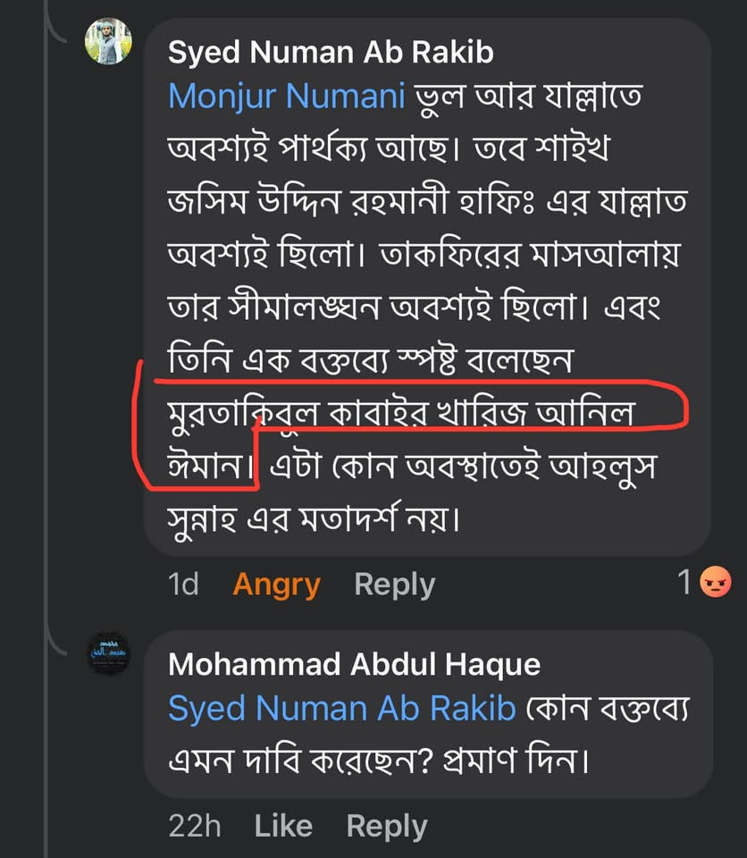

মানুষ কতবড় কাজ্জাব হলে এমন নির্জলা মিথ্যাচার করতে পারে! "কবিরা গোনাহ করলে ঈমান থেকে…
৩১ আগস্ট, ২০২৪
মানুষ কতবড় কাজ্জাব হলে এমন নির্জলা মিথ্যাচার করতে পারে! "কবিরা গোনাহ করলে ঈমান থেকে বেরিয়ে যায়।" এমন বিভ্রান্ত বক্তব্য শাইখ রাহমানির মতো আহলে ইলম থেকে প্রকাশ পাওয়া অসম্ভব। যে কারণে প্রমাণ চেয়েছি গতকাল। আজও আসে নি। আসবেও না, ইনশাআল্লাহ। তাকফিরের মাসআলায় শাইখ রাহমানির কোনো বাড়াবাড়ি ছিল কেউ প্রমাণ করতে পারে নি।
কিছু বিদ্বেষী লোক শাইখের নামে যে মিথ্যাচার আর তাঁর বক্তব্যের বিকৃত উপস্থাপন করছে, আল্লাহর দরবারে নিশ্চয়ই জবাবদিহি করতে হবে।
মানুষ কতবড় কাজ্জাব হলে এমন নির্জলা মিথ্যাচার করতে পারে! "কবিরা গোনাহ করলে ঈমান থেকে বেরিয়ে যায়।" এমন বিভ্রান্ত বক্তব্য শাইখ রাহমানির মতো আহলে ইলম থেকে প্রকাশ পাওয়া অসম্ভব। যে কারণে প্রমাণ চেয়েছি গতকাল। আজও আসে নি। আসবেও না, ইনশাআল্লাহ। তাকফিরের মাসআলায় শাইখ রাহমানির কোনো বাড়াবাড়ি ছিল কেউ প্রমাণ করতে পারে নি।
কিছু বিদ্বেষী লোক শাইখের নামে যে মিথ্যাচার আর তাঁর বক্তব্যের বিকৃত উপস্থাপন করছে, আল্লাহর দরবারে নিশ্চয়ই জবাবদিহি করতে হবে।
